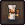

Vegetable salad
Vegetable salad is a food that increases  for 7:30 minutes.
for 7:30 minutes.
Variants
| Quality | Buff | |
|---|---|---|
| Bronze | 15 | |
| Silver | 20 | |
| Gold | 25 |
Obtaining

Cook adds +2 to the result:
| Blueprint | Result | Materials | Mastery | Technology |
|---|---|---|---|---|
Kitchen Table |
2x |
2x 2x Carrot 2x Beet |
||
| Ticks: 8 Points / craft: 1 | ||||
Study and alchemy
| Requires | Points | Runes |
|---|---|---|
| 2x |
5 5 |
Template:Food navbox